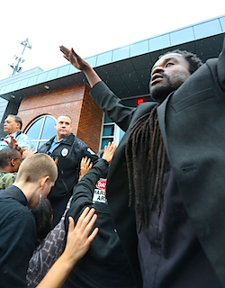

Friends,
Later this week, FOR, in partnership with South City Solidarity and Lane4 Events, has organized a St. Louis event to benefit jail support in Ferguson, featuring Saul Williams, Suheir Hammad, and local legend Nappy DJ Needles.
If you have friends or colleagues in the St. Louis area, please share the event with them on Facebook.
But you don't have to be in St. Louis to take part -- you can make an online donation to the Legal Support Fund for Justice for Michael Brown. The fund is being organized for Missourians Organizing for Reform and Empowerment, Organization for Black Struggle, and the Don't Shoot Coalition, of which FOR is a part.
Why jail support is necessary
In a recent year end summary, the jail support team revealed at least 600 people have been arrested in Ferguson, St. Louis City and County since the Aug. 9 killing of Michael Brown, many on spurious and highly questionable grounds, such as the so-called "Five-Second Rule."
Punitive bonds and holds for minor breaches have been commonplace. Amnesty International and legal observers, medics and journalists have all been targeted for arrest as police routinely abused freedoms of assembly and free speech.
Activists recently won a temporary restraining order from a federal judge (since extended for a further 45 days) against police for their indiscriminate use of chemical weapons.
Rev. Osagyefo Sekou of FOR, who himself was arrested twice in Ferguson, says "The brutal and highly militarized repression of a grieving community I witnessed here is a ghastly stain on this country's aspirations to democracy.
"That so many brave people were arrested -- often violently and without proper cause -- only underlines the deep suspicion many in this community already had that police and the so-called justice system are not here to protect, serve or represent us.
"FOR is honored to be involved in bringing these two multi-faceted artists, activists and renaissance revolutionaries to St. Louis, and to support the never ending work of all the jail support and legal teams," said Rev. Sekou.
Poet, actor and activist Saul Williams said, "I'm coming to Ferguson to engage with a new generation of activists and artists who are rightfully fed-up with this nation's slow crawl to justice. I'm coming to insist that our voices matter."
Please consider donating to the Ferguson legal support fund.
Thank you!
Ethan Vesely-Flad
Director of National Organizing
Fellowship of Reconciliation |